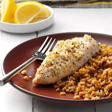

Chicken

Description
Chicken wrapped around tomato-basil feta cheese--simple, succulent, and sensational.
Ingredients
- 6 skinless, boneless chicken breast halves
- 6 ounces tomato basil feta cheese, crumbled
- ...ad nauseam ...
Steps
- Preheat oven to 350 degrees F (175 degrees C).
Lightly grease a 9x13 inch baking dish.
- Place chicken breasts between 2 pieces of waxed paper.
Gently pound chicken with flat side of meat mallet
or rolling pin until about 1/4 inch thick;
remove wax paper. Place 1 ounce of feta cheese
in the center of each chicken breast, and fold in half.
- ...ad nauseam